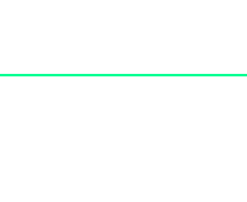

<section class="allSymbols">
  <div *ngFor="let item of symbols">
    <p>{{item.name}}</p>
    <p>{{item.value}}</p>
    <p>{{item.winRate}}</p>
    
  </div>
</section>
<main>
  <section class="container">
    <section class="game-container">
      <div id="line-container">
        <div>
          <!--  -->
        </div>
      </div>
      <section [class]="activeSpin ? 'game spining' : 'game default'">
        <div class="symbols row1" *ngFor="let item of SymbolHolder; let i = index">
          <!-- <p style="color: white; text-align: center;">{{i}}</p> -->
          
        </div>
      </section>
    </section>
    <section class="button-container">
      <button [disabled]="activeSpin" (click)="spin()">Spin</button>
      <audio id="audio" src="../../assets/sounds/spin.mp3"></audio>
      <audio id="win" src="../../assets/sounds/win.mp3"></audio>
      <audio id="nowin" src="../../assets/sounds/nowin.mp3"></audio>
    </section>
  </section>
</main>
